Du er fisken.
Ikke bli fanget.
Svøm opp fra korallrevet til dypet. Smett mellom kroker, garn, teiner og trålere, samle perler og lås opp et helt hav av fisker med egne krefter.
Kommer snart i App StoreGratis · For iPhone · Ingen reklame


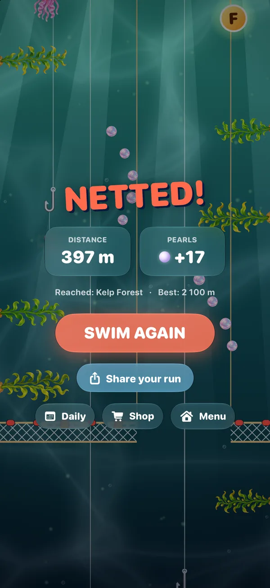

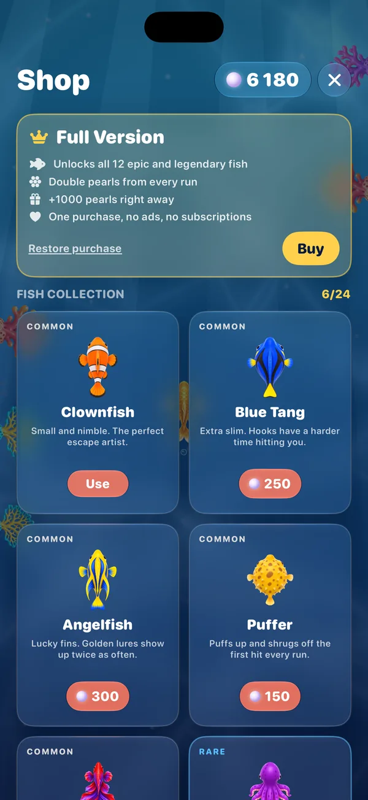
Slik spiller du
Én finger. Lært på sekunder, vanskelig å legge fra seg.
Fire soner, én lang svømmetur
Jo dypere du kommer, jo mørkere og vanskeligere blir det.
Mye å oppdage
Hver runde er forskjellig.
Krefter
Bobleskjold, perlemagnet og turbo. Plukk dem opp på vei opp.
Fiskevenner
Redd små fisker, så svømmer de med deg og hjelper til med perlene.
Daglig gave og oppdrag
Tre nye oppdrag hver dag og en gave som vokser med rekken din.
Game Center
Klatre på topplisten for lengste distanse og lås opp åtte prestasjoner.
Oppgraderinger
Bruk perler på sterkere magnet, ekstra hjerter, gullagn og krefter som varer lenger.
Del runden
Vis frem den beste runden din med et delekort til venner.
24 fisker å samle
Start som en liten klovnefisk. Kjøp fisker for perler eller tjen dem ved å spille. 22 av dem har sin egen kraft.
 VANLIGClownfishRømningseksperten du starter med
VANLIGClownfishRømningseksperten du starter med VANLIGBlue TangEkstra slank, vanskeligere å hekte
VANLIGBlue TangEkstra slank, vanskeligere å hekte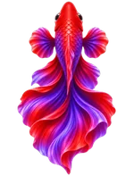
VANLIGBettaDe flotteste finnene i havet SJELDENOctopusHenter perler dobbelt så langt unna
SJELDENOctopusHenter perler dobbelt så langt unna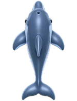
SJELDENDolphinNestentreff gir dobbelt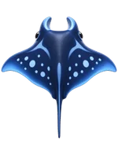
SJELDENManta RayKrefter varer 50 % lenger SJELDENSeahorseFår venner dobbelt så fort
SJELDENSeahorseFår venner dobbelt så fort SJELDENMandarin FishNestentreff-kombo gir dobbelt
SJELDENMandarin FishNestentreff-kombo gir dobbelt SJELDENAxolotlKommer tilbake til livet én gang
SJELDENAxolotlKommer tilbake til livet én gang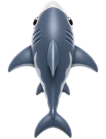
EPISKSharkBiter over en krok hvert 12. sekund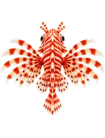
EPISKLionfishRiver seg gjennom det første garnet EPISKAnglerfishLokker til seg dobbelt så mange krefter
EPISKAnglerfishLokker til seg dobbelt så mange krefter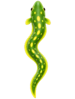
EPISKElectric EelImmun mot maneter EPISKSwordfishStarter hver runde i turbofart
EPISKSwordfishStarter hver runde i turbofart EPISKKoiFRENZY dobbelt så ofte
EPISKKoiFRENZY dobbelt så ofte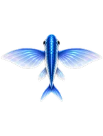
EPISKFlying FishHopper over en krok hvert 15. sekund EPISKHammerheadBiter over en krok hvert 8. sekund
EPISKHammerheadBiter over en krok hvert 8. sekund EPISKBelugaOpptil 5 venner samtidig
EPISKBelugaOpptil 5 venner samtidig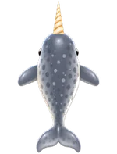
LEGENDARISKNarwhalKnekker en krok hvert 6. sekund LEGENDARISKOrcaStarter stor og biter over kroker
LEGENDARISKOrcaStarter stor og biter over kroker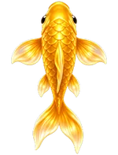
LEGENDARISKGolden KoiHver perle er verdt det dobbelteFullversjon
Off the Hook er gratis og uten reklame. Liker du det, åpner fullversjonen resten av havet for én betaling.
Gratis
- Alle fire soner
- 12 vanlige og sjeldne fisker
- Daglig gave og oppdrag
- Oppgraderinger, krefter og fiskevenner
- Toppliste og prestasjoner i Game Center
♛ Fullversjon
- Alle 12 episke og legendariske fisker (Shark, Narwhal, Orca, Golden Koi …)
- Dobbelt så mange perler fra hver runde
- +1000 perler med en gang
- Gjenopprett på alle enhetene dine (og med Familiedeling)